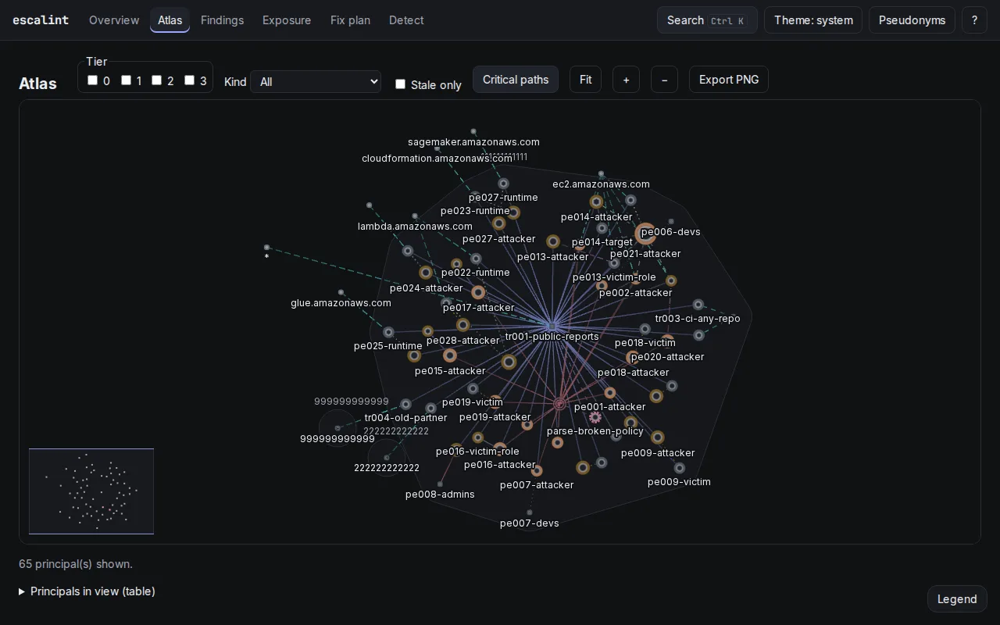

escalint
Maps who can become administrator in an AWS account from a read-only snapshot.
Almost nobody holds AdministratorAccess directly in an AWS account. The risk lives in combinations: iam:PassRole with lambda:CreateFunction, or a role whose trust policy the user can rewrite. No single policy looks dangerous. escalint reads an IAM snapshot of one or more accounts, evaluates the policies the way AWS does and builds the graph of who can act as whom, all the way to admin.
- 39 rules, each linked to the AWS docs and the pathfinding.cloud catalog
- Shows the exact statement that allows each step and what CloudTrail would record
- Computes the smallest set of changes that closes every path
- Text, JSON and SARIF output for CI, plus a web interface with nine views
